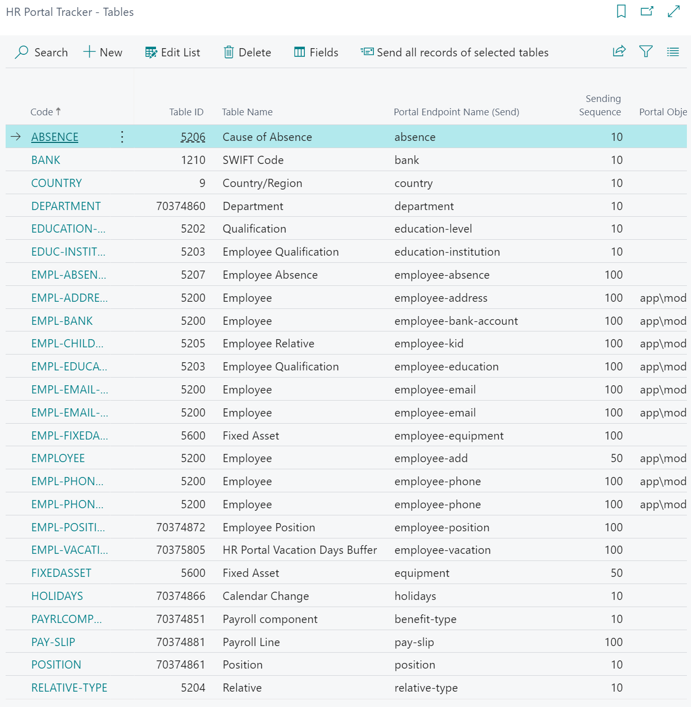
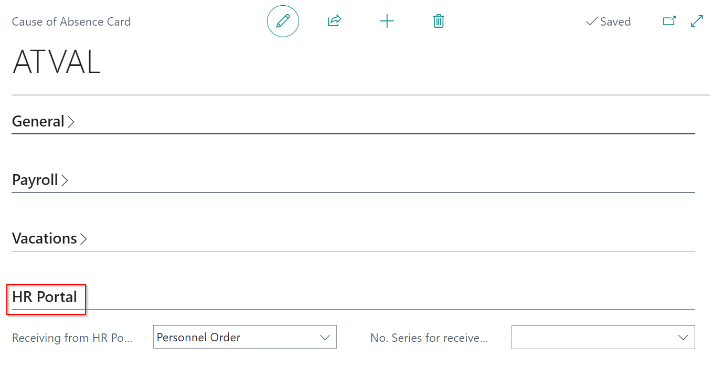
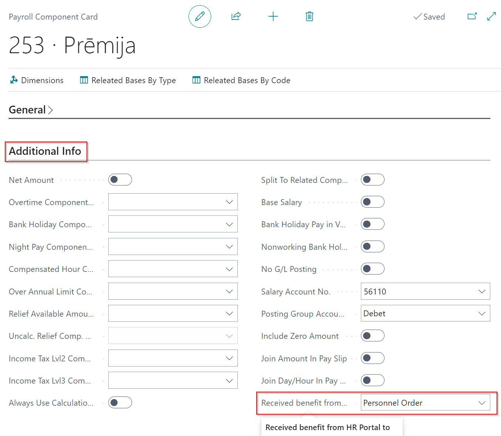
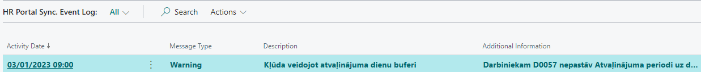
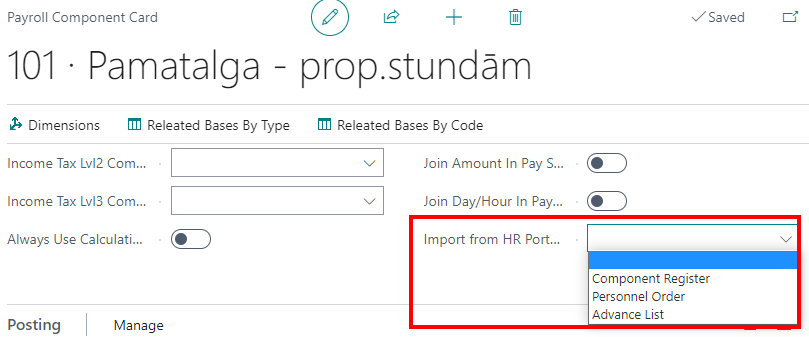

How to get started
- In order to start working, Elva Baltic solutions Latvian Payroll, Latvian Payroll Advanced, and Latvian Personnel should be installed.
- The role center “LV Personnel” should be used for personalisation. Open the functions:
- The following information should be received from the Panorama 365 developers:
- API address
- User name
- Password
Synchronization setup
- HR Portal Sync. Setup (an example):
- HR Portal Tracker fields and tables. To set them up, you can import (apply) the configuration package and change the setup if necessary:
As a result, in the HR Portal Tracker - Tables page new records are created:

The Sending Filter To BC table can be changed (for example, relative code, calendar code, absence code etc.). The corresponding fields that will be synchronized are defined for each record. For example, for employee absence the following fields are defined:
- If the synchorinzation needs to be automated, this process should be defined in the Job Queue Entries. Create a new process card in the Job Queue Entries page (if the configuration package has been imported, the process is created automatically; the setup can be viewed and updated for the specific organization).
To sync the remaining absence days, the following process is necessary:
It should run not more often than once a day.
- To receive the information about absences from Panorama 365, it should be defined where the information about the specific type of absence will be synchronized. Find the Causes of Absence list, open the Cause of Absence card and fill in the section HR Portal.

It is possibe to receive the information from Panorama 365 either in the list of Employee Absences or the Personnel Order List.
If you choose the Personnel Order List, it is necessary to set up the No. Series for received Pers. Order. The No. Series will be used when the information from Panorama 365 is received.
In case this part is not filled in the Cause of Absence card, the absences with this code will not be synchronized.
- To receive the information about bonuses from Panorama 365, it is necessary to indicate where the information from Panorama 365 will be received for the corresponding Payroll Component

It is possible to choose from the following options:
- Personnel Order
- Component Register
- Advance List
Depending on the type chosen, Dynamics 365 Business Central will create: 1) a Personnel Order with a corresponding Payroll Component Code, 2) a corresponding record in the monthly Component Register, or 3) a corresponding record in the monthly Advance List. In case the field is not filled in the Payroll Component Card, the bonuses with this Payroll Component Code will not be synchronized.
Manual Synchronization
In case it is necessary to run the synchronization manually, it can be done in Gadījumā, ja nepieciešams veikt sinhronizāciju ārpus grafika, to var izdarīt: HR Portal Sync. -> Tasks-> Synchronize with HR Portal
If you click on Gen. Vacation Days the vacation day buffer will be regenerated. When the next synchronization is run, data will be updated.
What to do in case the planned synchronization fails
If the planned synchronization fails, it is necessary to find the reason. In order to do it:
Check if the status for the corresponding Job Queue entry is Ready.
Check if all records are processed in the HR Portal Sync. Entries list. To do it, open the list. If at least one of the records has the status Pending, it means that the records are not sent to Panorama 365.
Find the first record with the status Error. It can be done by clicking on the Go to First Pending.
After the notification, the error should be solved. When data is in order, you can Send Changes:
If the issue cannot be solved, but te synchronization needs to run, the record can be canceled. However, take into account that the record will not be sent to Panorama 365. It needs to checked if the record is not related to the next records; otherwise, all related records should be canceled. Then Choose Cancel Entries:
- In case the status for the records in the HR Portal Sync. Entries is Processed, but the synchronization does not work, the HR Portal Sync. Entries Log needs to be checked.
In this journal all synchronization processes and their results are recorded. In case there is an error when the data is imported from Panorama 365, the record regarding the error is created in the entry log.

When data is in order (on Panorama 365 side or the Dynamics 365 Business Central), the synchronization process should be run - manually or with the job queue if it had stopped.
Periodically, the records in this journal should be deleted not to save too many records in Dynamics 365 Business Central. The function Delete Entries deletes all records selected from the list:
- If the issue cannot be identified and the requsts that were processed during the synchronization need to be analyzed, the field Enable Debug needs to be turned on in the table HR Portal Sync. Setup. Then run the synchronization and choose to Export Details to File for the last error message in the HR Portal Sync. Event Log There will be infromation about the API requests with Json data in the file. After the issue is solved, the field Enable Debug needs to be turned off not to save additional information in the data base (text files).
Processing Schemes
Personal information
It is possible to synchronize the employee's personal information. When a new employee is hired, the data is filled in Dynamics 365 Business Central and sent to Panorama 365 Panorama 365. On Panorama 365 side the employees themselves can make the changes:
- Address
- Private phone
- Private e-mail
- Bank Account
After the information is approved on Panorama 365 side, it is sent to the Dynamics 365 Business Central.
If data is changed on the Dynamics 365 Business Central side, the updated information is automatically sent to Panorama 365.
Children
Employee can add or modify information about their children. It is forbidden to delete information about children in Panorama 365. After the approval, data is sent to Dynamics 365 Business Central. If the function about the additional vacation days is turned in Dynamics 365 Business Central, it will recalculate the number of the vacation days starting from the current period.
If the data is inserted / modified / deleted on Dynamics 365 Business Central side, the information is updated also in Panorama 365.
The following information is maintained:
- Child's name / surname (optional - not recommended)
- Date of birth
- Sex (not synchronized, because there is no such field on Dynamics 365 Business Central side)
- Invalidity
Education
It is possible to synchronize data regarding employees' qualifications. When the information is added in Panorama 365 and approved, it is sent to Dynamics 365 Business Central.
- Educational establishment (Dynamics 365 Business Central field - institution / organization)
- Level of education (Dynamics 365 Business Central field - Qualification code and Description)
- Type of education (not synchronized)
- Speciality (Dynamics 365 Business Central field - Degree)
- Date from (Dynamics 365 Business Central field - Date from)
- Date to (Dynamics 365 Business Central field - Date to)
If data regarding education is input / modified / deleted in Dynamics 365 Business Central, the information is updated also in Panorama 365.
It is forbidden to correct the qualification code (level of education) both in Dynamics 365 Business Central and Panorama 365. The record has to be deleted on Dynamics 365 Business Central side and a new record has to be created in Dynamics 365 Business Central or Panorama 365.
It is forbidden to delete the records regarding the employee qualification in Panorama 365.
Absence processing
When the absence records are created / updated / deleted in Dynamics 365 Business Central, they are sent to Panorama 365. The information that is sent: Cause of Absence Code, Description, G/U Code, Calendar Day Limit, Country/Region Code.
In Panorama 365, there is a setup for each Cause of Absence code. It indicated how the specific code needs to be processed. The main synchrnization settings:
It is possible to indicate the payment method for the absences:
Only the absences with the status Approved are sent to Dynamics 365 Business Central.
Depending on the absence setup in Dynamics 365 Business Central, the record is created either in the list of Employee Absences or the Personnel Order List. If the Import Code is not ndicated for the Cause of Absence, the absence will not be imported in Dynamics 365 Business Central and there will be a warning in the table HR Portal Sync. Event Log
If the imported record (personnel order) is deleted or anulled in Dynamics 365 Business Central, the information about the cancelled absence will be sent to Panorama 365.
Imported records (absences) can be deleted on Dynamics 365 Business Central side, if no payroll documents are applied. The absences can be cancelled if a payroll document is already applied. As a result, Dynamics 365 Business Central will send the information about the cancelled absence to Panorama 365.
Pay Slip
The pay slip is sent by Dynamics 365 Business Central only if the Payroll Header has a status Released or Posted. In case the status is changed to Open, data is deleted on Panorama 365 side. If a recalculation is done in this document, and the status is then again changed to Released or Posted, data is updated on Panorama 365 side as well.
In case the calculation is reversed, additional pay slip is sent to Panorama 365. Accordingly, all pay slips regarding reversed and not reversed payroll headers will be available in Panorama 365.
Bonuses / Reducations / Advances synchronization
To synchronize the bonuses / reductions, the catalogue of the Payroll Components should be sent to Panorama 365.
HR Portal Tracker - Tables:
| Code | Table ID | Description | Portal Endpoint Name (export) | Exporting sequence | Portal Object Name (import) | Not Track Changes | Export Filter for NAV Table |
|---|---|---|---|---|---|---|---|
| PAYRLCOMPONENT | 25000000 | Payroll Component | benefit-type | 10 | No | where(Type=Filter(Income|Without Taxes|Deduction)) |
HR Portal Tracker - Fields:
| Row No. | Type | Field no. | Description | Constant / Function | Portal Field Name | Portal Field Type | Portal Field Length | Portal External Key | Portal Field Mandatory | Skip Field Validation |
|---|---|---|---|---|---|---|---|---|---|---|
| 1 | Field | 1 | Code | code | string | 50 | No | No | No | |
| 2 | Field | 3 | Name | Description | string | 500 | No | No | No | |
| 3 | Constant | 0 | 0 | payAsPercent | int | 0 | No | No | No | |
| 4 | Function | 0 | PayrlCompAmount | presetedValue | float | 0 | No | No | No | |
| 5 | Function | 0 | IsDeleted | state | int | 0 | No | No | No | |
| 6 | Field | 25000970 | Country/Region Code | countryCode | string | 0 | No | No | No |
According to the Payroll Components, the request Application Type should be created in Panorama 365.
The setting Employee can change amount for allowances can be turned off, but then on Dynamics 365 Business Central side the amount should be defined (Payroll Component Card -> Setup -> From date / amount).
In case it is allowed that there are several employees in one request, it is allowed to turn on the option Requestable in bulk.
Payroll Components - import
In the Payroll Components, an option in the field Import from HR Portal to needs to choosed:

Only the requests with the status Approved will be sent to Dynamics 365 Business Central from Panorama 365.
List of Payroll Components
When a new record is created in the Component register, Dynamics 365 Business Central checks if a register with a feature Register created From HR Portal does not already exist. If the register already exists, a new row with Employee No., Payroll Component Code, and Amount is created. If the register does not exist, a new Component Register with the correct date, month, and a feature Register created from HR Portal is created taking the date from Panorama 365 into account.
If a new request for several employees is created in Panorama 365, a separate Component Register is created in Dynamics 365 Business Central.
It is allowed to delete the Component Register as a whole or delete separate register rows. Then Dynamics 365 Business Central sends information about the cancelled register to Panorama 365. It is not allowed to modify the records imported from Panorama 365.
Personnel Order
When a new Personnel Order is created, Dynamics 365 Business Central checks if an order row with an imported HR Portal ID already exists. If it exists, the process will be canceled with an error message in the HR Portal Sync. Entry Log, and the status Canceled will be sent to Panorama 365. If the row does not exist, a new Personnel Order and a row with an imported employee and absence type is created - Bonus / Reduction.
The following fields are filled:
- Component Code
- Date
- Amount
- HR Portal ID
Each request is created as a separate order except when a request for several employees at once is created in Panorama 365. In that case, one request for several employees is created. It is forbidden to modify the order, the order rows or the order card. The order should be booked. If necessary, the order can be canceled; then Dynamics 365 Business Central will sent the information about the canceled record to Panorama 365.
In case the status cannot be changed to Released, because the standard check (for isntance, the Payroll Header already exists) has worked, it is allowed to delete the order or order rows to book the Personnel Order. The status Canceled will be sent to Panorama 365.
Advance List
When a new Advance List is created for several employees, then a separate list is created for each request. In case an advance is requested for separate employees, it will be imported in the first open list in which the employee is not already included. The information for th component row is filled:
- Code
- Amount
The advances and advance rows can be deleted. In this case, Dynamics 365 Business Central will send the information about the Canceled record to Panorama 365. It is forbidden to modify the records imported from Panorama 365.
If Panorama 365 sends data about a month in which the payroll row already exists:
- If the status for the Payroll Header is Open, an error notification will appear and the synchronization will stop.
- If the status for the Payroll Header is Released or Posted, the error will appear in the HR Portal Sync. Entry Log. Additionally, Dynamics 365 Business Central will send the information about the Canceled records to Panorama 365, but the synchronization process will continue.
Working Time
Panorama 365 sends data regarding the working time with the status Approved (that has not been sent previously) to Dynamics 365 Business Central. The period is not important.
Only the actual working time is received in Dynamics 365 Business Central (accounted).
The following information is sent (from the table employee-hour-periods):
- Date
- Hours
- Night hours
- Position No. (if it is not filled in, the main position is found)
In the records, only the rows for the dates that were sent from Panorama 365 are created. To add the absences to this register, the function Copy from Absence Register needs to be activated.
Dimensions are not processed.
One document is created from the received data in the corresponding period.
In case of a position change, the new position has to be synchronized to Panorama 365 before the working hours are sent to Panorama 365.
The actual hours received can be modified and deleted in Dynamics 365 Business Central. The information will not be sent to Panorama 365; therefore, it can differ from the information in Dynamics 365 Business Central.